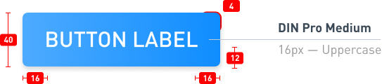

Buttons
Buttons are the goto to trigger an action on a page. They can trigger creative or destructive actions, allow you to execute in-page action or let you go to a new page.
A button is a visual aspect to catch the eye of the user and invite him to do something in a specific context. The DNA of our buttons is quite classical. The basic shape is coming with a lot of variations to cover several use cases.
Table of Contents
Button DNA
The buttons all come with a minimal surface area on which it is possible to interact to trigger actions. The smallest size variation is 32 pixels wide, and even if the visual size is that small, the minimum "touch" area is 40 pixels wide minimum.
Here some technical information for basic buttons.

Technical Basics
Information you need in order to build a basic button:
- Barlow Medium 16px Uppercase is used in white
- Background is a Primary on normal state.
- Padding left and right are 16px, top and bottom are 12px
- Border Radius are 4 pixels
- Total height is approximately 40px. Approx. because we never block the height of an element with a text inside of it (accessibility recommandation).
Buttons Variations
Buttons are used for creating assertiveness and engagement for an action. Depending on the goals of the page, view or block of content, the choice of the type of button is important. Follow these guides to help you chose and keep consistency.
State Variations
While using a button, the user will make it pass by several states described as following:
See it in action:
Those different states above are defined globally for all our buttons.
Style Variations
Different stylings exist to make the button more or less eye-catching depending on the goal of the button, especially the part played by the button in the page/interface.
The Contained button (.ButtonContained) is made to have a strong emphasis and is eye-catching on purpose. You can find it on several color variations.
- Normal
- Positive action
- Warning action
- Destructive action
The Outlined one (.ButtonOutlined) is made to have a second range importance. It's usually the secondary action of a page. You can find it on several color variations.
- Normal
- Positive action
- Warning action
- Destructive action
- Neutral context
The Text one (.ButtonText) is made to be really discrete for repetive actions within a table, or secondary/tertiary not important actions on the page. You can find it on several color variations.
- Normal
- Positive action
- Warning action
- Destructive action
- Neutral context
Color Variations
Color variations are used to bring more emphasis to certain type of actions at the first look. Of course color is not the only way to convey the information –that would be not accessible for color blind people– a clear label is also provided.
- Normal
- #gradient-blue-complete
- Positive action
.is-success- #gradient-green-complete
- Warning action
.is-warning- #gradient-orange-complete
- Destructive action
.is-danger- #gradient-red-complete
As you can see, I kind of lied to you when I first described the DNA of a button. Truth is in our Design tool we use some kind of background. When comes the time to code and animate the background, we use a combination of 2 backgrounds with linear gradients to create one. It's the one called "complete" for each color.
Here is how you should use those colors:
- Normal
- This color is used for one of the main actions within the page.
- Success
- Positive action are normally not that marked on our interfaces. They're dressed in normal blue, but sometimes you need to distinguish several kind of main actions available at the same time. Here comes the green.
- Warning
- Honestly, they are not used that much, but they can intervene in the same kind of cases as green color: when there is a need to distinguish alert levels in the main actions within the page.
- Danger
- They are used here and there when the action will destroy or delete something which will not be recoverable later. Of course we implement a second level of warning, like a second action to valid the deletion, or we allow the user to cancel their action in a short delay of time.
Our Text and Outlined variation come with a neutral gray color used in some precise context where blue becomes to omnipresent, to detach attention.
Those neutral are not that much used, and not really accessible (poor contrast). We are working on removing them.
Form Variations
In some case, we use a variation of shape: pills. Also named Rounded in our case. Those buttons are used on editoral content, on call-to-action blocks, when they can be centered or alone with some space around it. It's more for visual presentation, less for rich interfaces.
- Contained Rounded
.is-rounded
- Outlined Rounded
.is-rounded
- Text Rounded
.is-rounded
All style variations are concerned by this rounded alternative.
Size variations
We work in a complexe environment where responsive and rich interfaces are kind of our daily basic designer challenge. And size matters.
- Small
.is-small- ≈ 32px height
- Medium
.is-medium- ≈ 40px height
- Normal
.is-normal / empty- ≈ 48px height
- Big
.is-big- ≈ 56px height
- Full Width
.is-full-width- Takes 100% of container width
All size variations are compatible with all the previous modifiers, and .is-full-width compatible with sizes as well.
The height of each button is approximative because we don't fix the height of our element and component for accessibility reasons. Dimensions of containers have to be flexible.
Status variations
While using buttons, one's can change their status depending on the action behind it. For example, after activating one, you could need to wait for server response, the waiting/loading status is applied. Another example: if a form is not well filled in, the submit button would be disabled.
- Loading Button
.is-loading
- Disabled Button
[disabled]
- Loading Button
.is-loading
- Disabled Button
[disabled]
disabled attribute is used for styling not enabled buttons, but the styling also works with aria-disabled="true" attribute, which has the same meaning. The goal is to educate developers (new comers) in the importance of meaningful attributes.